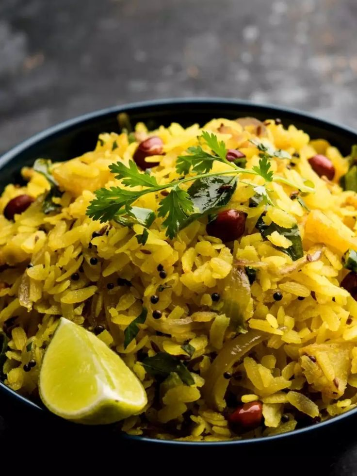

Poha Recipe
Poha is a light and flavorful Indian breakfast made with flattened rice, mustard seeds, turmeric, green chilies, and fresh coriander. Perfect for a quick morning meal!

Ingredients
- 1 cup flattened rice (poha)
- 1 tbsp oil
- 1/2 tsp mustard seeds
- 5-6 curry leaves
- 1 green chili, chopped
- 1/4 cup chopped onion
- 1/4 tsp turmeric powder
- Salt to taste
- 1/2 lemon
- Fresh coriander for garnish
Instructions
- Rinse the poha in water and drain completely. Let it sit for 5 minutes.
- Heat oil in a pan. Add mustard seeds and let them splutter.
- Add curry leaves and green chilies, sauté for a few seconds.
- Add chopped onions and cook till translucent.
- Add turmeric and salt. Stir well.
- Add the soaked poha and mix gently.
- Cook on low heat for 2-3 minutes.
- Turn off the heat, squeeze lemon juice, and garnish with coriander.